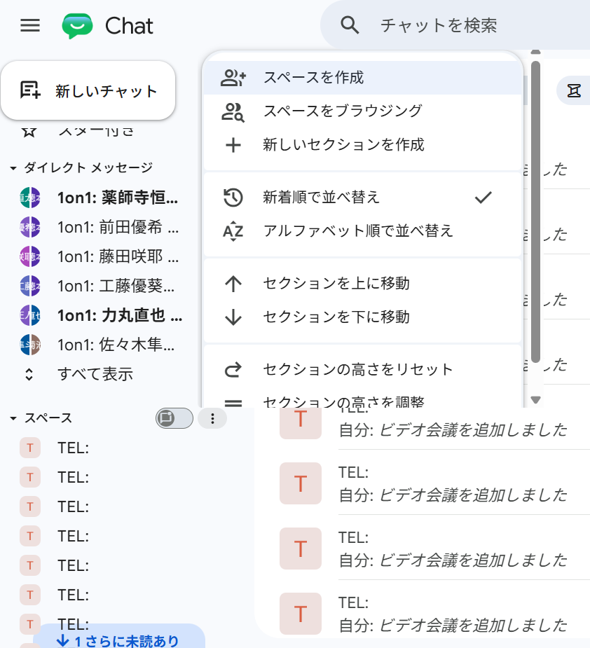
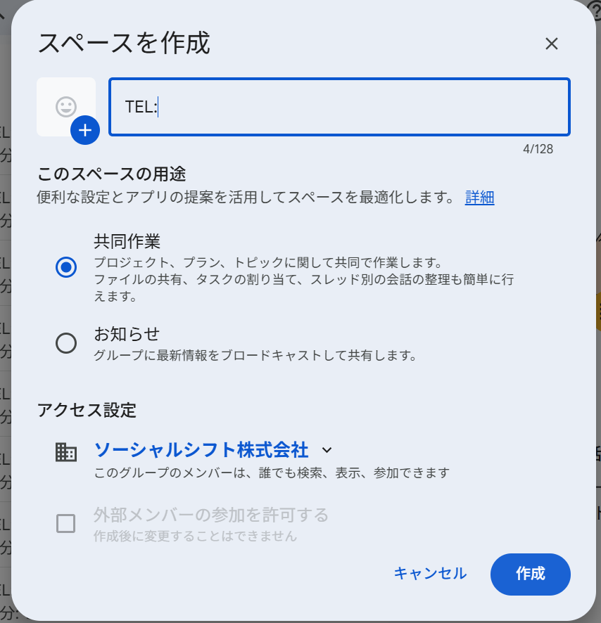
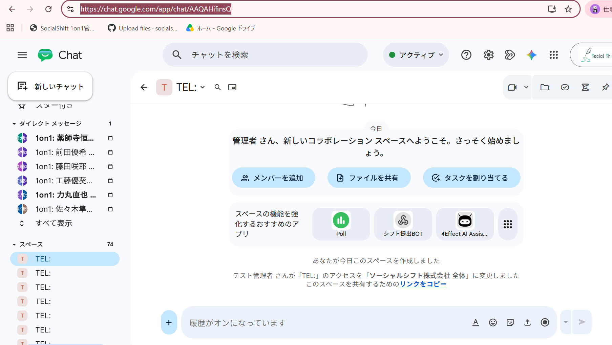
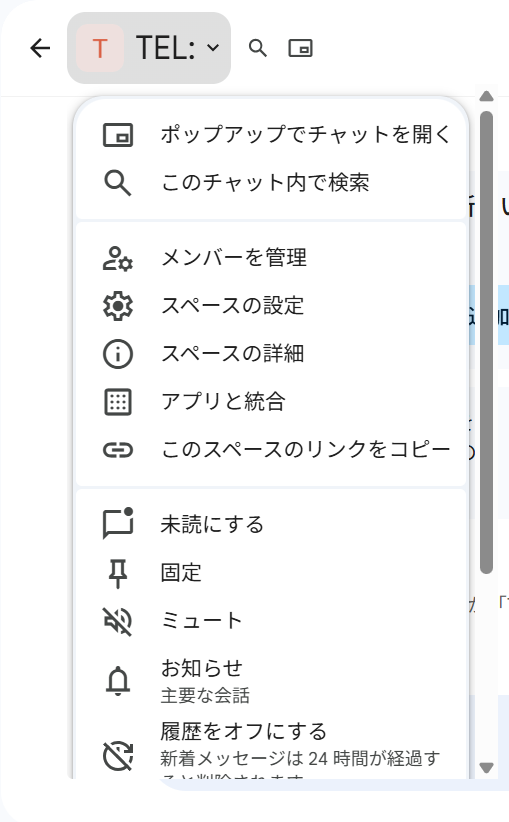
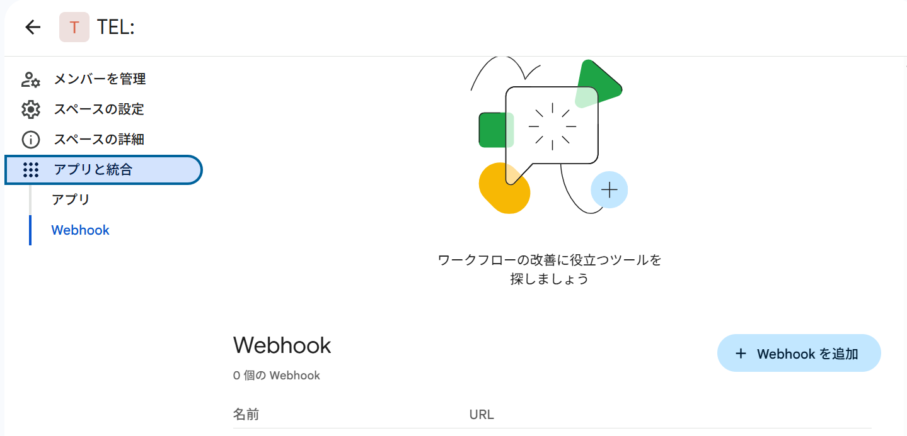
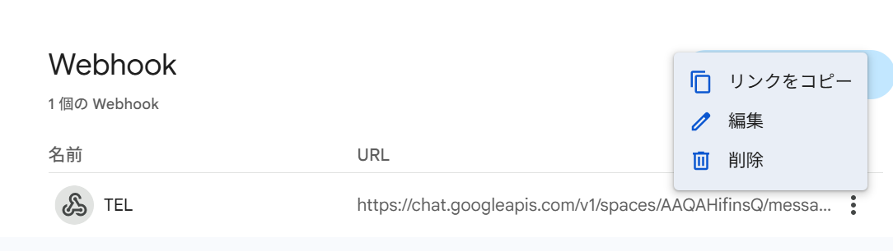
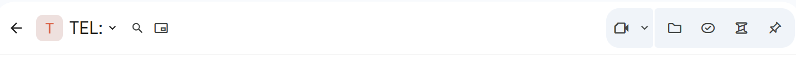
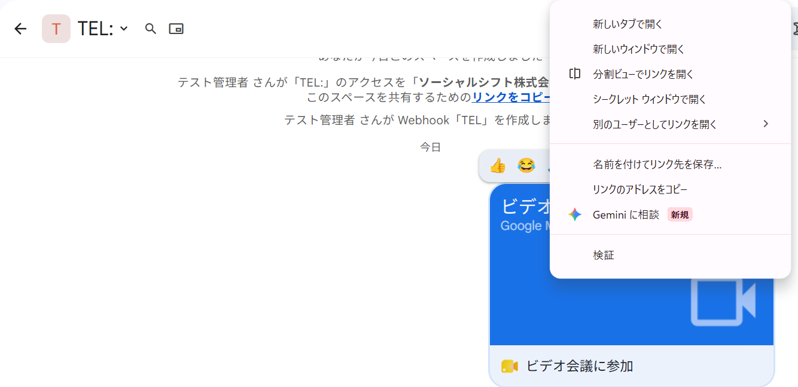

管理者向け・PC操作手順
TELスペース ストック追加マニュアル
Google ChatでTEL用スペースを作り、スペースURL・Webhook URL・Meet URLの3つを控えて、Admin画面の「ストック追加」に登録します。
画面を見ながら順番に進めれば完了できるよう、操作箇所をスクショ中心でまとめています。
使うGoogleアカウント
test.admin@socialshift.work でログインしてから作業します。
登録するもの
スペースURL、Webhook URL、Meet URL の3つです。
スペース名
作成時は TEL: と入力します。T・E・L・: はすべて半角です。
作業前チェック
途中でURLを3つコピーします。先にメモ帳などを開いておくと迷いません。
Google Chatを開く
メモ帳を開く
Admin画面を開く
スペースURL
https://chat.google.com/...
Webhook URL
https://chat.googleapis.com/v1/spaces/...
Meet URL
https://meet.google.com/xxx-xxxx-xxx
Webhook URLは外部に共有しないでください。知っている人がChatへ通知を送れるURLです。
1. スペースURL・Webhook URL・Meet URLを用意する
Google Chat上でTEL用スペースを作り、Adminに貼り付ける3つのURLを集めます。
1
Google Chatで「スペースを作成」を選ぶ
test.admin@socialshift.work でログインし、Google Chatに移動します。左側のメニューから「スペースを作成」をクリックします。
押す場所: 新しいチャット付近のメニュー → スペースを作成

スクショ1: 「スペースを作成」を選びます。
スペース名の入力欄に TEL: と入力します。用途は「共同作業」のままで大丈夫です。
注意: TEL: はすべて半角で入力します。全角の「ＴＥＬ：」にしないでください。

スクショ2: スペース名は「TEL:」にします。
スペースが開いたら、ブラウザ上部のアドレスバーをクリックしてURLをコピーします。
控えるもの: スペースURL

スクショ3: アドレスバーのURLがスペースURLです。
4
スペース名横のメニューから「アプリと統合」を開く
画面上部のスペース名「TEL:」の横にある下向きのマークをクリックします。メニュー内の「アプリと統合」を選びます。
押す場所: TEL: の横の下向きマーク → アプリと統合

スクショ4: 「アプリと統合」を開きます。
左側で「Webhook」を選び、下にスクロールして「+ Webhookを追加」をクリックします。Webhook名は TEL、アバターは空欄で登録します。
入力する名前: TEL

スクショ5: 「+ Webhookを追加」をクリックします。
作成されたWebhookの右側にある三点リーダーをクリックし、「リンクをコピー」を選びます。
控えるもの: Webhook URL
Webhook URLはパスワードに近い扱いです。マニュアルやチャットに貼りっぱなしにしないでください。

スクショ6: 「リンクをコピー」でWebhook URLを取得します。
左上の戻る矢印などでチャット画面に戻ります。画面右上のビデオカメラのボタンを押して、ビデオ会議を追加します。
押す場所: 右上のビデオカメラボタン

スクショ7: ビデオカメラのボタンからMeetを設定します。
チャットに表示された青い「ビデオ会議」の部分を右クリックし、「リンクのアドレスをコピー」を選びます。
控えるもの: Meet URL

スクショ8: Meetのリンクアドレスをコピーします。
ビデオ会議をクリックして表示される三点リーダーから「ボードに固定」を選びます。後から見つけやすくするための作業です。
ここまでで、スペースURL・Webhook URL・Meet URLの3つがそろっていれば、Google Chat側の準備は完了です。
2. Admin画面からストックに登録する
Admin画面では、先ほど控えた3つのURLを同じ行に貼り付けて登録します。
TELスペース管理
ChatスペースのストックとメンティーへのTEL割り当て
+ ストック追加
TELスペースをストックに追加
Google Chatで事前に作成したスペースのURLとWebhook URLを登録します。
https://chat.google.com/...
https://chat.googleapis.com/v1/spaces/...
https://meet.google.com/xxx-xxxx-xxx
登録する
1. TELスペース管理
2. ストック追加
3. 3つのURLを貼る
4. 登録する
複数のストックを作る場合は、Google Chatで別のTELスペースを作成し、URLを3つずつ控えて登録します。
同じWebhook URLやMeet URLを別ストックに使い回さないでください。
完了確認
登録後は、以下の3点だけ確認します。
ストック総数が増えた
未割り当てに表示された
URLが3つ入っている
登録後にエラーが出る場合は、URLの貼り間違いが多いです。スペースURLは chat.google.com、Webhook URLは chat.googleapis.com、Meet URLは meet.google.com で始まっているか確認してください。